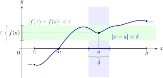

Hoofdstuk 12Continuı̈teit

Leerplandoelstellingen (GO! Navigator)
Basisvorming (BV3_06)
-
• BV3_06.19 (MD 06.18) De leerlingen beargumenteren wiskundige redeneringen.
Gevorderde wiskunde (WD3_06.08)
-
• WD3_06.08.25 De leerlingen definiëren continuı̈teit en het limietbegrip op een formele manier.
-
– afbakening: beeld van een gesloten interval door een continue functie, met inbegrip van de tussenwaardenstelling
-
– WD3_06.08.25.01 De leerlingen definiëren continuı̈teit op een formele manier.
-
– WD3_06.08.25.02 (MD 06.08.14) De leerlingen definiëren het limietbegrip op een formele manier.
-
-
• WD3_06.08.26 (MD 06.08.16) De leerlingen bepalen grafisch en algebraı̈sch limieten van functies en analyseren het asymptotisch gedrag.
-
– afbakening: continuı̈teit
-
– afbakening: horizontaal, verticaal en schuin asymptotisch gedrag
-
-
• WD3_06.08.42 (MD 06.08.39) De leerlingen beargumenteren wiskundige redeneringen en bewijzen wiskundige uitspraken.
-
– afbakening: bewijstechnieken: rechtstreeks bewijs, contrapositie, bewijs uit het ongerijmde, bewijs door volledige inductie, existentieel bewijs, bewijs door gevalsonderscheiding, ontkrachting door tegenvoorbeeld
-
– afbakening: kwantoren
-
Didactische uitwerking: continuı̈teit van functie in \(\R \), intuı̈tieve definitie, omgevingsdefinitie, \(\varepsilon ,\delta \)-definitie, links- en rechtscontinu, continuı̈teit en bewerkingen met functies, eigenschappen van functies die continu zijn in gesloten interval, Weierstrass of tussenwaardenstelling, Bolzano, benaderingsmethode voor het bepalen van nulwaarden van continue functies
Extra uitleg: inwendig punt, omgeving, discontinu, linker omgeving, rechter omgeving, elke veeltermfunctie, elke rationale functie en elke irrationale functie is continu in haar domein
I Continuı̈teit van functie in \(\R \)
1 Intuı̈tieve definitie
Voorbeelden
De grafieken verlopen vloeiend, zonder onderbreking. Deze functies zijn continu in elk punt \(x \in [a,b]\).
De grafieken van deze functies worden onderbroken: ze maken een sprong of bestaan niet in \(x_1\).
Deze functies zijn discontinu in \(x_1\) of niet continu.
Definitie
-
• Een functie \(f\) in \(\R \) is continu in \(x_1 \in \dom f\) als haar grafiek vloeiend verloopt in \(x_1\) (dus geen onderbreking).
-
• Een functie \(f\) in \(\R \) is discontinu in \(x_1\) als
\[ x_1 \notin \dom f \qquad \text {ofwel} \qquad f \text { een sprong maakt in } x_1. \]
-
• Een functie \(f\) in \(\R \) is continu in \(I=]a,b[\) als \(f\) continu is \(\forall x \in I=]a,b[\).
2 Omgevingsdefinitie
Inwendig punt
Een punt \(a\) is een inwendig punt van een verzameling \(A\) als er rond \(a\) nog een klein open interval volledig in \(A\) ligt.
\[ a \text { is inwendig punt van } A \quad \Leftrightarrow \quad \exists \varepsilon > 0 : ]a-\varepsilon ,a+\varepsilon [ \subset A \]
Omgeving
Een verzameling \(A\) is een omgeving van \(a\) als \(A\) een open interval rond \(a\) bevat.
\[ A \in \mathcal {V}_a \quad \Leftrightarrow \quad \exists \varepsilon > 0 : ]a-\varepsilon ,a+\varepsilon [ \subset A \]
Weetje. De letter \(V\) in \(\mathcal {V}(a)\) komt waarschijnlijk van het Franse woord voisinage, dat “omgeving” of “nabijheid” betekent.
\[ \mathcal {V}(a) = \{\text {alle omgevingen van } a\} \]
In Engelstalige cursussen zie je soms ook \(\mathcal {N}(a)\), van neighbourhood.
Continu
\[ \begin {array}{c} f \text { is \textbf {continu} in } a \in \dom f \\[1ex] \Updownarrow \\[1ex] \begin {array}{c} \text {voor elke omgeving \(B\) van \(f(a)\), bestaat er een omgeving \(A\) van \(a\)} \\ \text {zodat } f(A) \subset B \end {array} \\[1ex] \Updownarrow \\[1ex] \forall B \in \mathcal {V}_{f(a)}\; \exists A \in \mathcal {V}_a : f(A) \subset B. \end {array} \]
Discontinu
\[ f \text { is \textbf {discontinu} in } a \in \dom f \Leftrightarrow \exists B \in \mathcal {V}_{f(a)}\; \forall A \in V_a : f(A) \not \subset B. \]
3 \(\varepsilon ,\delta \)-definitie
Opstellen
Stel \(f:\R \to \R \) is continu in \(a \in \dom f\).
\[ \begin {array}{c} f \text { is continu in \(a \in \dom f\)} \\[1ex] \Updownarrow \\[1ex] \forall B \in \mathcal {V}_{f(a)}\; \exists A \in \mathcal {V}_{a} : f(A) \subset B \end {array} \]
We beperken ons tot \(\varepsilon \)-omgevingen voor
\[ f(a):\quad ]f(a)-\varepsilon ,\ f(a)+\varepsilon [ = B \]
en
\[ a:\quad ]a-\delta ,\ a+\delta [ = A \]
met \(\varepsilon \) en \(\delta \in \R _0^+\).
Daarmee wordt de definitie:
\(\seteqnumber{0}{}{0}\)\begin{align*} & & f \text { is continu in \(a \in \dom f\)} \\ & \Leftrightarrow & \forall \varepsilon \in \R _0^+\; \exists \delta \in \R _0^+: f(]a-\delta ,\ a+\delta [) & \subset ]f(a)-\varepsilon ,\ f(a)+\varepsilon [ \\ & \Leftrightarrow & \forall \varepsilon \in \R _0^+\; \exists \delta \in \R _0^+\; \forall x \in \dom f: x \in ]a-\delta ,\ a+\delta [ & \Rightarrow f(x) \in ]f(a)-\varepsilon ,\ f(a)+\varepsilon [ \\ & \Leftrightarrow & \forall \varepsilon \in \R _0^+\; \exists \delta \in \R _0^+\; \forall x \in \dom f: a-\delta < x < a+\delta & \Rightarrow f(a)-\varepsilon < f(x) < f(a)+\varepsilon \\ & \Leftrightarrow & \forall \varepsilon \in \R _0^+\; \exists \delta \in \R _0^+\; \forall x \in \dom f: -\delta < x-a < \delta & \Rightarrow -\varepsilon < f(x)-f(a) < \varepsilon \\ & \Leftrightarrow & \forall \varepsilon \in \R _0^+\; \exists \delta \in \R _0^+\; \forall x \in \dom f: |x-a| < \delta & \Rightarrow |f(x)-f(a)| < \varepsilon \end{align*}
\[ \boxed { \begin {array}{c} f \text { is continu in \(a \in \dom f\)} \\[0.5ex] \Updownarrow \\[0.5ex] \forall \varepsilon \in \R _0^+\; \exists \delta \in \R _0^+\; \forall x \in \dom f: |x-a|<\delta \Rightarrow |f(x)-f(a)|<\varepsilon \end {array} } \]
Voorbeeld
Bewijs m.b.v. \(\varepsilon ,\delta \)-def. dat
\[ f(x)=3x+1 \]
continu is in \(x=2\).
T.b.:
\[ \forall \varepsilon \in \R _0^+\; \exists \delta \in \R _0^+\; \forall x \in \dom f\;(=\R ): |x-2|<\delta \Rightarrow |f(x)-f(2)|<\varepsilon \]
\(\seteqnumber{0}{}{0}\)\begin{align*} & & |x-2|<\delta & \Rightarrow |f(x)-f(2)|<\varepsilon \\ & \Leftrightarrow & |x-2|<\delta & \Rightarrow |3x+1-7|<\varepsilon \\ & \Leftrightarrow & |x-2|<\delta & \Rightarrow |3x-6|<\varepsilon \\ & \Leftrightarrow & |x-2|<\delta & \Rightarrow 3|x-2|<\varepsilon \\ & \Leftrightarrow & |x-2|<\delta & \Rightarrow |x-2|<\frac {\varepsilon }{3} \end{align*}
Voor elke keuze van \(\varepsilon \) kunnen we dus een \(\delta \) vinden, nl.
\[ \delta =\frac {\varepsilon }{3}. \]
De uitspraak is dan waar. Bijvoorbeeld:
\[ \varepsilon =\frac {1}{1000} \quad \Rightarrow \quad \delta =\frac {1}{3000}. \]
\[ \boxed {f \text { is continu in \(x=2\).}} \]
4 Oefeningen
-
(a) \(f(x)=5x+12\) continu in \(a=1\)?
T.B.: \(\forall \varepsilon \in \R _0^+\; \exists \delta \in \R _0^+\; \forall x \in \R : |x-1|<\delta \Rightarrow |5x+12-5-12|<\varepsilon \)
\(\seteqnumber{0}{}{0}\)\begin{align*} & \Leftrightarrow & |x-1|<\delta & \Rightarrow |5x-5|<\varepsilon \\ & \Leftrightarrow & |x-1|<\delta & \Rightarrow |x-1|<\frac {\varepsilon }{5} \end{align*}
\[ \Rightarrow \forall \varepsilon \in \R _0^+\; \exists \delta \in \R _0^+, \text { nl. kies } \delta =\frac {\varepsilon }{5}. \]
\[ \boxed {f \text { is continu in \(a=1\).}} \]
-
(b) \(f(x)=x^2\) continu in \(a=0\)?
T.B.: \(\forall \varepsilon \in \R _0^+\; \exists \delta \in \R _0^+\; \forall x \in \R : |x-0|<\delta \Rightarrow |x^2-0^2|<\varepsilon \)
\(\seteqnumber{0}{}{0}\)\begin{align*} & \Leftrightarrow & |x|<\delta & \Rightarrow |x^2|<\varepsilon \\ & \Leftrightarrow & |x|<\delta & \Rightarrow |x|<\sqrt {\varepsilon } \end{align*}
\[ \Rightarrow \forall \varepsilon \in \R _0^+\; \exists \delta \in \R _0^+, \text { nl. kies } \delta =\sqrt {\varepsilon }. \]
\[ \boxed {f \text { is continu in \(a=0\).}} \]
-
(c) \(f(x)=px+q\) continu in \(a=10\) met \(p \in \R _0\) en \(q \in \R \)?
T.B.: \(\forall \varepsilon \in \R _0^+\; \exists \delta \in \R _0^+\; \forall x \in \R : |x-10|<\delta \Rightarrow |px+q-10p-q|<\varepsilon \)
\(\seteqnumber{0}{}{0}\)\begin{align*} & \Leftrightarrow & |x-10|<\delta & \Rightarrow |p(x-10)|<\varepsilon \\ & \Leftrightarrow & |x-10|<\delta & \Rightarrow |p|\,|x-10|<\varepsilon \\ & \Leftrightarrow & |x-10|<\delta & \Rightarrow |x-10|<\frac {\varepsilon }{|p|} \end{align*}
\[ \Rightarrow \forall \varepsilon \in \R _0^+\; \exists \delta \in \R _0^+, \text { nl. kies } \delta =\frac {\varepsilon }{|p|}. \]
\[ \boxed {f \text { is continu in \(a=10\).}} \]
-
(d) \(f(x)=-x^2+6x-7\) continu in \(a=3\)?
T.B.: \(\forall \varepsilon \in \R _0^+\; \exists \delta \in \R _0^+\; \forall x \in \R : |x-3|<\delta \Rightarrow |-x^2+6x-7+9-18+7|<\varepsilon \)
\(\seteqnumber{0}{}{0}\)\begin{align*} & \Leftrightarrow & |x-3|<\delta & \Rightarrow |-x^2+6x-9|<\varepsilon \\ & \Leftrightarrow & |x-3|<\delta & \Rightarrow |-(x-3)^2|<\varepsilon \\ & \Leftrightarrow & |x-3|<\delta & \Rightarrow |x-3|<\sqrt {\varepsilon } \end{align*}
\[ \Rightarrow \forall \varepsilon \in \R _0^+\; \exists \delta \in R_0^+, \text { nl. kies } \delta =\sqrt {\varepsilon }. \]
\[ \boxed {f \text { is continu in \(a=3\).}} \]
II Links- en rechtscontinu
1 Definitie
\[ \begin {array}{c} f \text { is } \begin {cases} \text {linkscontinu}\\ \text {rechtscontinu} \end {cases} \text { in } a \in \dom f \\[1ex] \Updownarrow \\[1ex] \begin {array}{c} \forall B \in \mathcal {V}_{f(a)}\; \exists A \begin {cases} \text { linker omgeving}\\ \text { rechter omgeving} \end {cases} \text { van } a : f(A) \subset B \end {array}\\ \Updownarrow \\[1ex] \forall \varepsilon \in \R _0^+\; \exists \delta \in \R _0^+\; \forall x \in \dom f: \begin {cases} a-\delta < x < a\\ a < x < a+\delta \end {cases} \Rightarrow |f(x)-f(a)|<\varepsilon \end {array} \]
2 Gevolg
\[ \boxed { \begin {array}{c} f \text { is continu in } [a,b] \\[1ex] \Updownarrow \\[1ex] \begin {array}{ll} 1) & f \text { is continu in } ]a,b[ \\[0.5ex] 2) & f \text { is rechtscontinu in } a \\[0.5ex] 3) & f \text { is linkscontinu in } b \end {array} \end {array} } \]
3 Eigenschap
\[ \boxed { \begin {array}{c} f \text { is continu in elk punt } a \in \dom f \\[1ex] \Updownarrow \\[1ex] f \text { is links- en rechtscontinu in } a \end {array} } \]
4 Oefeningen
VBTL – Analyse 2: p109, nr 1 (met GRM), 2
III Continuı̈teit en bewerkingen met functies
1 Eigenschappen
Als \(f\) en \(g\) continu zijn in \(a \in \R \), dan
\[ \begin {array}{ll} 1) & f+g \text { is continu in } a. \\[0.5ex] 2) & k \cdot f \text { is continu in } a \quad (k \in \R ). \\[0.5ex] 3) & f \cdot g \text { is continu in } a. \\[0.5ex] 4) & g(a) \neq 0 \Rightarrow \dfrac {f}{g} \text { is continu in } a. \\[1ex] 5) & \begin {array}[t]{l} \text {Als } f \text { continu is in } a \text { en } g \text { continu is in } b=f(a),\\ \text {dan is } g \circ f \text { continu in } a. \end {array} \end {array} \]
Zonder bewijs.
2 Gevolg
\[ \boxed { \begin {array}{c} \text {Elke veeltermfunctie, elke rationale functie en elke irrationale functie} \\ \text {is continu in haar domein!} \end {array} } \]
Het volstaat dus voor een algebraı̈sche functie om haar domein te bepalen om de continuı̈teit na te gaan.
Ter herinnering:
\[ \begin {array}{lll} \dom (\text {veeltermfunctie}) & = & \R \\[0.5ex] \dom (\text {rationale functie}) & : & \text {B.V.: noemer} \neq 0 \\[0.5ex] \dom (\text {irrationale functie}) & : & \text {B.V.: onder } \sqrt {\phantom {x}} \geq 0 \end {array} \]
3 Oefeningen
VBTL Analyse 2: p109 nr 3
4 Toch een bewijs
Bewijs.
Stel \(f\) en \(g\) continu in \(a\)
T.b.:
\[ f+g \text { is continu in } a. \]
Neem \(\varepsilon \in \R _0^+\). Omdat \(f\) continu is in \(a\):
\[ \exists \delta _1 \in \R _0^+\; \forall x \in \dom f: |x-a|<\delta _1 \Rightarrow |f(x)-f(a)|<\frac {\varepsilon }{2}. \]
Omdat \(g\) continu is in \(a\):
\[ \exists \delta _2 \in \R _0^+\; \forall x \in \dom g: |x-a|<\delta _2 \Rightarrow |g(x)-g(a)|<\frac {\varepsilon }{2}. \]
Kies
\[ \delta =\min \{\delta _1,\delta _2\}. \]
Dan geldt voor \(x \in \dom (f+g)\):
\(\seteqnumber{0}{}{0}\)\begin{align*} & & |x-a| &< \delta \\ & \Rightarrow & |x-a| &< \delta _1 && \text {en } |x-a|<\delta _2 \\ & \Rightarrow & |f(x)-f(a)| &< \frac {\varepsilon }{2} && \text {en } |g(x)-g(a)|<\frac {\varepsilon }{2} \end{align*} Dus:
\(\seteqnumber{0}{}{0}\)\begin{align*} & & |(f+g)(x)-(f+g)(a)| & = |f(x)+g(x)-f(a)-g(a)| \\ & & & = |(f(x)-f(a))+(g(x)-g(a))| \\ & \leq & & |f(x)-f(a)|+|g(x)-g(a)| \\ & < & & \frac {\varepsilon }{2}+\frac {\varepsilon }{2} \\ & = & & \varepsilon \end{align*} Bijgevolg:
\[ \forall \varepsilon \in \R _0^+\; \exists \delta \in \R _0^+\; \forall x \in \dom (f+g): |x-a|<\delta \Rightarrow |(f+g)(x)-(f+g)(a)|<\varepsilon . \]
\[ \boxed {f+g \text { is continu in } a.} \]
IV Eigenschappen van functies die continu zijn in gesloten interval
1 Weierstrass of tussenwaardenstelling
Stelling
Is een functie \(f\) continu \(\forall x \in [a,b]\), dan neemt ze in \([a,b]\) minstens één maal elke waarde aan begrepen tussen \(f(a)\) en \(f(b)\).
Meetkundige betekenis
2 Bolzano
= bijzonder geval Weierstrass met \(p=0\)
Stelling
Is een functie \(f\) continu in \([a,b]\) en hebben \(f(a)\) en \(f(b)\) een verschillend teken, dan bestaat er minstens één \(m \in ]a,b[\) waarvoor
\[ f(m)=0. \text { (dus $m$ is een nulwaarde)} \]
Meetkundige betekenis
Bewijs.
Stel \(f\) continu in \([a,b]\) en \(f(a)\) en \(f(b)\) hebben een verschillend teken.
Zonder verlies van algemeenheid:
\[ f(a)<0<f(b). \]
Het andere geval volgt analoog, of door \(-f\) te bekijken.
Beschouw
\[ S=\{x \in [a,b] \mid f(x)<0\}. \]
Dan is \(S \neq \varnothing \), want \(a \in S\), en \(S\) is naar boven begrensd door \(b\). Dus bestaat, door de volledigheid van \(\R \),
\[ m=\sup S. \]
We tonen aan dat \(f(m)=0\).
Stel eerst \(f(m)<0\). Dan is
\[ \varepsilon =-f(m)>0. \]
Omdat \(f\) continu is in \(m\):
\[ \exists \delta \in \R _0^+ \; \forall x \in [a,b]: |x-m|<\delta \Rightarrow |f(x)-f(m)|<\varepsilon . \]
Dus voor zulke \(x\):
\(\seteqnumber{0}{}{0}\)\begin{align*} & & |f(x)-f(m)| &< -f(m) \\ &\Rightarrow & f(x)-f(m) &< -f(m) \\ &\Rightarrow & f(x) &< 0. \end{align*}
Er liggen dus nog punten \(x>m\) met \(f(x)<0\). Dit is in strijd met
\[ m=\sup S. \]
Dus \(f(m)<0\) kan niet.
Stel nu \(f(m)>0\). Dan is
\[ \varepsilon =f(m)>0. \]
Omdat \(f\) continu is in \(m\):
\[ \exists \delta \in \R _0^+ \; \forall x \in [a,b]: |x-m|<\delta \Rightarrow |f(x)-f(m)|<\varepsilon . \]
Dus voor zulke \(x\):
\(\seteqnumber{0}{}{0}\)\begin{align*} & & |f(x)-f(m)| &< f(m) \\ &\Rightarrow & -f(m) &< f(x)-f(m) \\ &\Rightarrow & 0 &< f(x). \end{align*}
Dus in een omgeving links van \(m\) liggen geen punten van \(S\). Dit is in strijd met
\[ m=\sup S, \]
want punten van \(S\) moeten willekeurig dicht links van \(m\) liggen.
Bijgevolg:
\[ f(m) \not < 0 \qquad \text {en} \qquad f(m) \not > 0. \]
Dus:
\[ \boxed {f(m)=0} \]
Daarmee:
\[ \boxed {\exists m \in ]a,b[ : f(m)=0.} \]
3 Toepassing: Benaderingsmethode bij bepalen van nulwaarden
Voorbeeld
Bepaal tot op \(2\) decimalen nauwkeurig de nulwaarden van
\[ f(x)=x^2-3x+1. \]
\[ \begin {array}{c|cccc} x & 0 & 1 & 2 & 3 \\ \hline f(x) & + & - & - & + \end {array} \]
\[ \begin {array}{c} f(0) \text { en } f(1) \text { hebben verschillend teken} \Rightarrow \text { nulwaarde tussen } 0 \text { en } 1, \\[0.5ex] f(2) \text { en } f(3) \text { hebben verschillend teken} \Rightarrow \text { nulwaarde tussen } 2 \text { en } 3. \end {array} \]
Tussen \(0\) en \(1\):
Neem midden \(m_1=\dfrac 12\) van \([0,1]\).
\[ f(m_1)=-0,25<0. \]
\[ f(0) \text { en } f(m_1) \text { hebben verschillend teken} \Rightarrow \text { nulwaarde tussen } 0 \text { en } \frac 12. \]
Neem midden \(m_2=\dfrac 14\) van \(\left [0,\dfrac 12\right ]\).
\[ f(m_2)=0,3125>0 \qquad \Rightarrow \text { nulwaarde tussen } \frac 14 \text { en } \frac 12. \]
Neem midden \(m_3=\dfrac 38\) van \(\left [\dfrac 14,\dfrac 12\right ]\).
\[ f\left (\frac 38\right )>0. \qquad \Rightarrow \text { nulwaarde tussen } \frac 38 \text { en } \frac 12. \]
\[ \begin {array}{c|cc|cc} \text {stap} & \multicolumn {2}{c|}{\text {startwaarden}} & \multicolumn {2}{c}{\text {midden}} \\ & a & b & m & f(m) \\ \hline 1 & 0 & 1 & \frac 12 & -\frac 14<0 \\ 2 & 0 & \frac 12 & \frac 14 & 0,3125>0 \\ 3 & \frac 14 & \frac 12 & \frac 38=0,375 & 0,015625>0 \\ 4 & \frac 38 & \frac 12 & \frac {7}{16}=0,4375 & -0,1211<0 \\ 5 & \frac 38 & \frac {7}{16} & \frac {13}{32}=0,40625 & -0,0537<0 \\ 6 & \frac 38 & \frac {13}{32} & \frac {25}{64}=0,390625 & -0,0193<0 \\ 7 & \frac 38 & \frac {25}{64} & \frac {49}{128}=0,3828125 & -0,0019<0 \\ 8 & \frac 38 & \frac {49}{128} & \frac {97}{256}=0,37890625 & 0,00685>0 \\ 9 & \frac {97}{256} & \frac {49}{128} & \frac {195}{512}=0,380859 & 0,00248>0 \\ 10 & \frac {195}{512} & \frac {49}{128} & \frac {391}{1024}=0,381835 & 0,00029>0 \end {array} \]
\[ \Rightarrow \boxed {\text {nulwaarde } \approx 0,38 \text { op } 2 \text { decimalen}} \]
Programmeren
Zie lessen informaticawetenschappen in 6de.
4 Oefeningen
VBTL – Analyse 2 : p109 nr6